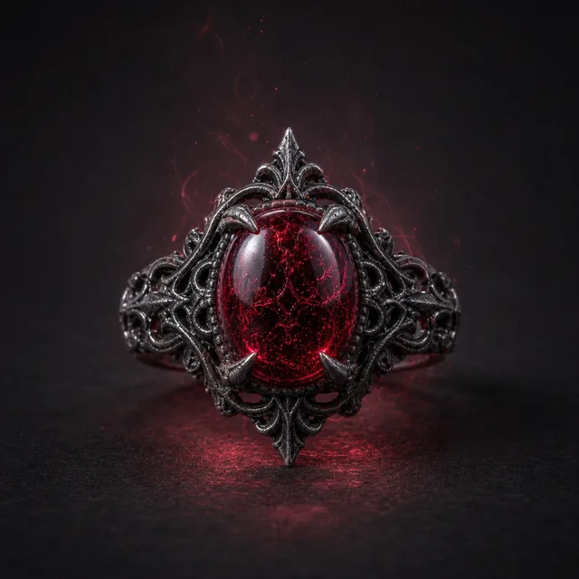

Предмет · undefined · №13
Стоимость Призыва: 2 Кровавый Шип: Совершите Бросок Заклинания против противника в пределах Средней дистанции. При успехе вы наносите d8+6 магического урона с использованием Мастерства, и цель отмечает Стресс. Кровавый Туман: Вы можете потратить 2 Надежды, чтобы стать кровавым туманом до конца сцены — или пока вы не станете недееспособны либо не решите закончить эффект. Вы можете проходить сквозь пространства размером с замочную скважину, левитировать и иметь иммунитет к физическому урону. В этой форме вы можете занимать то же пространство, что и противник, но не можете сопротивляться ветровым потокам или подобным силам. Любые атаки в этой форме должны использовать Кровавый Шип.
Открыть в генераторе лута